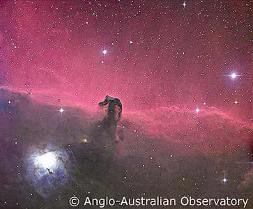
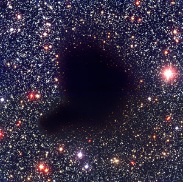

Dark nebulae are interstellar clouds that contain a very high concentration of dust. This allows them to scatter and absorb all incident optical light, making them completely opaque at visible wavelengths. They are most obvious when located in front of a bright emission nebula (e.g. the Horsehead nebula in Orion) or in a region that is very rich in stars (e.g. Barnard 68 in Ophiuchus). The most famous example in the southern hemisphere is the Coal Sack nebula near α Crux in the Southern Cross.
The average temperature inside a dark nebula ranges from about 10 to 100 Kelvin, allowing hydrogen molecules to form and star formation to take place. Large dark nebulae that can contain over a million solar masses of material and extend over 200 parsecs are known as giant molecular clouds. The smallest ones, called Bok globules, tend to be less than 3 light years across and contain less than 2000 solar masses of material.
|

The Horsehead nebula silhouetted against a bright HII region, is the most famous example of a dark nebula.
Credit: AAO/David Malin |

A visual image of Barnard 68, a dark nebula sillouetted against a region very rich in stars.
Credit: ESO |